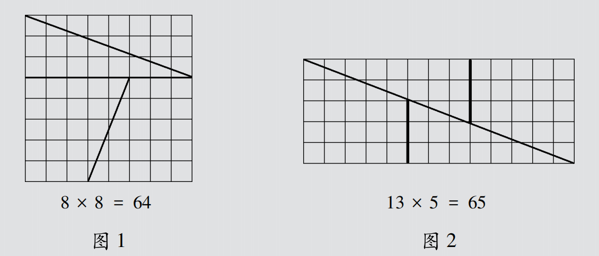
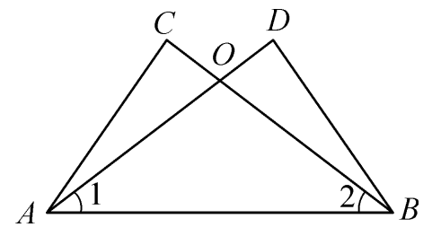
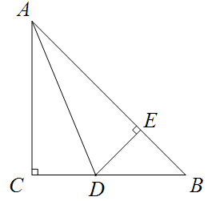

下图是由方格纸剪拼而成：将图1按粗线剪开，再按图2拼合，方格图的面积竟然“增加”了一个平方单位！你相信吗？

实际上，中间有一个平行四边形裂缝，三点并不共线——视觉错觉欺骗了我们。这个例子告诉我们：观察和实验不能替代逻辑证明。几何结论必须经过严格的演绎推理才能确认。
今天我们将系统地复习全等三角形这一重要的推理工具。
定义： 能够完全重合的两个三角形是全等三角形。
性质：
| 方法 | 简写 | 条件 | 依据 | 注意 |
|---|---|---|---|---|
| 边边边 | SSS | 三边对应相等 | 基本事实 | — |
| 边角边 | SAS | 两边及其夹角对应相等 | 基本事实 | 角必须是夹角 |
| 角边角 | ASA | 两角及其夹边对应相等 | 基本事实 | — |
| 角角边 | AAS | 两角及其中一角的对边相等 | 定理 | 可由ASA推导 |
| 斜边直角边 | HL | 斜边和一条直角边对应相等 | 定理 | 仅直角三角形 |
🔺 等腰三角形
性质定理 等边对等角（等腰三角形的两个底角相等）
判定定理 等角对等边（有两个角相等的三角形是等腰三角形）
🔻 等边三角形
性质 三边相等，三个角都等于60°
判定 ①三个角都相等；②有一个角是60°的等腰三角形
✂️ 角平分线
性质定理 角平分线上的点到角两边的距离相等
判定定理 角的内部到角两边距离相等的点在角的平分线上
📏 垂直平分线
性质定理 线段垂直平分线上的点到线段两端点的距离相等
判定定理 到线段两端距离相等的点在线段的垂直平分线上
如图，在$\triangle ABC$和$\triangle BAD$中，$AD$与$BC$相交于点$O$，$\angle 1 = \angle 2$，请你添加一个条件（不再添加其他线段，不再标注或使用其他字母），使$AC = BD$，并给出证明。

如图，在Rt$\triangle ABC$中，$\angle C = 90^\circ$，$AC = BC$，$AD$平分$\angle BAC$交$BC$于点$D$，$DE \perp AB$于点$E$。求证：$\triangle BDE$的周长等于$AB$的长。

证明： ∵ $AD$平分$\angle BAC$，$\angle C = 90^\circ$，$DE \perp AB$，∴ $DC = DE$（角平分线性质定理）。
又$AC = BC$，且$\angle C = 90^\circ$，∴ $\triangle ABC$是等腰直角三角形，$\angle B = 45^\circ$，∴ $\triangle BDE$也是等腰直角三角形，∴ $BE = DE$。
∴ $\triangle BDE$的周长 $= BD + DE + BE = BD + DC + BE = BC + BE = AC + BE = AE + BE = AB$。
在$\triangle ABC$中，$AB$的垂直平分线交直线$BC$于点$D$，$AC$的垂直平分线交直线$BC$于点$E$，且$DE = 4\,\text{cm}$，$BD = 6\,\text{cm}$，$EC = 5\,\text{cm}$。求线段$BC$的长。
点$D$、$E$可能在$BC$线段上，也可能在延长线上，需根据不同的位置关系分类讨论计算$BC$的长度。具体数值结果不唯一。
已知命题：“等腰三角形两腰上的中线相等”。
(1) 写出它的逆命题；
(2) 判断逆命题的真假，若为真，请给出证明；若为假，请举出反例。
(1) 逆命题： 如果一个三角形两边上的中线相等，那么这个三角形是等腰三角形。
(2) 是真命题。 证明如下：
在$\triangle ABC$中，设$AB$边上的中线$CD$与$AC$边上的中线$BE$相等，即$BE = CD$。
取$BC$中点$F$，连接$EF$、$DF$，可证$\triangle BEF \cong \triangle CDF$（SSS），得$\angle EBF = \angle DCF$，进而$\angle ABC = \angle ACB$，所以$AB = AC$，即$\triangle ABC$是等腰三角形。
（注：也可通过重心性质或倍长中线法证明）
本章中，许多重要的定理成对出现，互为逆定理。理解这种互逆关系，能帮助我们从“性质”和“判定”两个方向灵活解决几何问题。
原命题正确，逆命题不一定正确。例如“对顶角相等”的逆命题“相等的角是对顶角”是假命题。
但当一个定理的逆命题也是定理时，它们就称为互逆定理，这是几何推理中非常重要的双向逻辑结构。